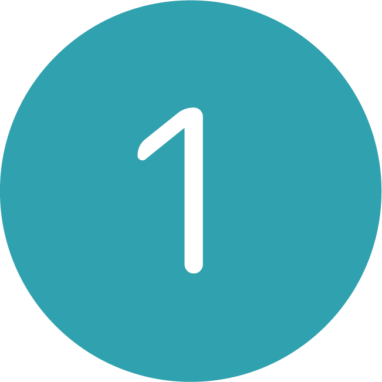
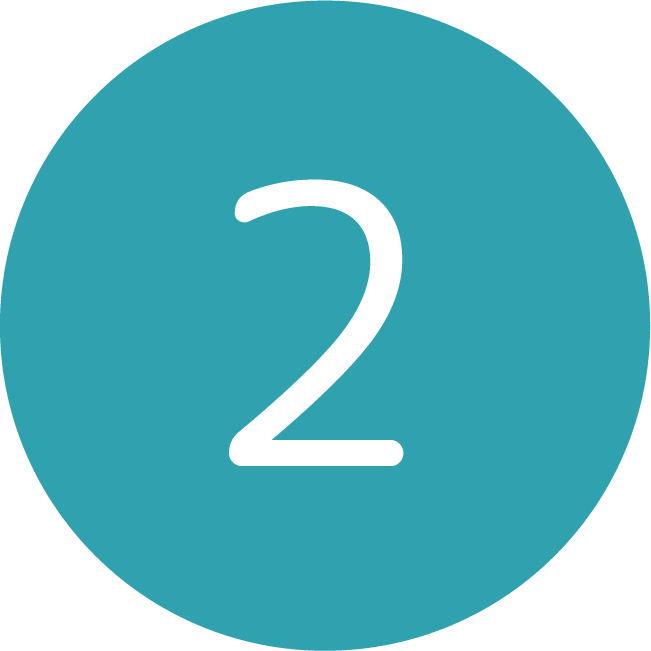
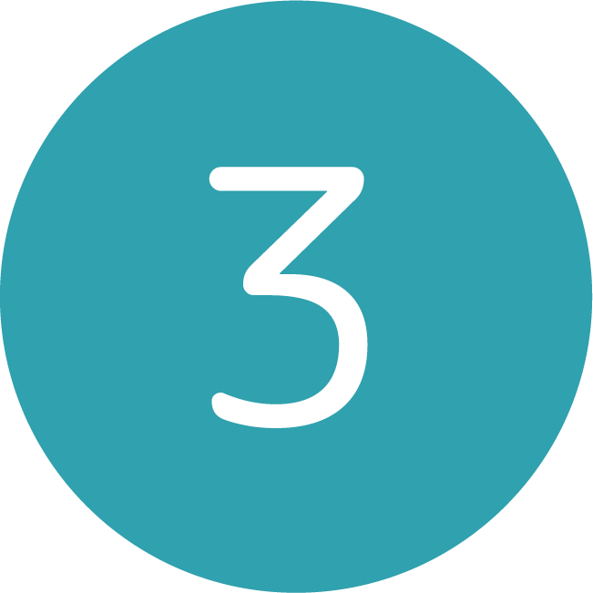
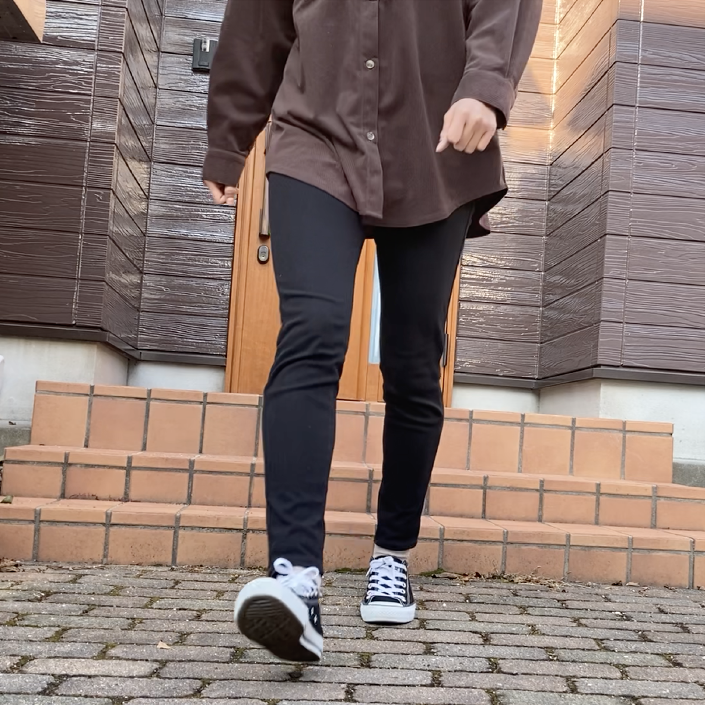
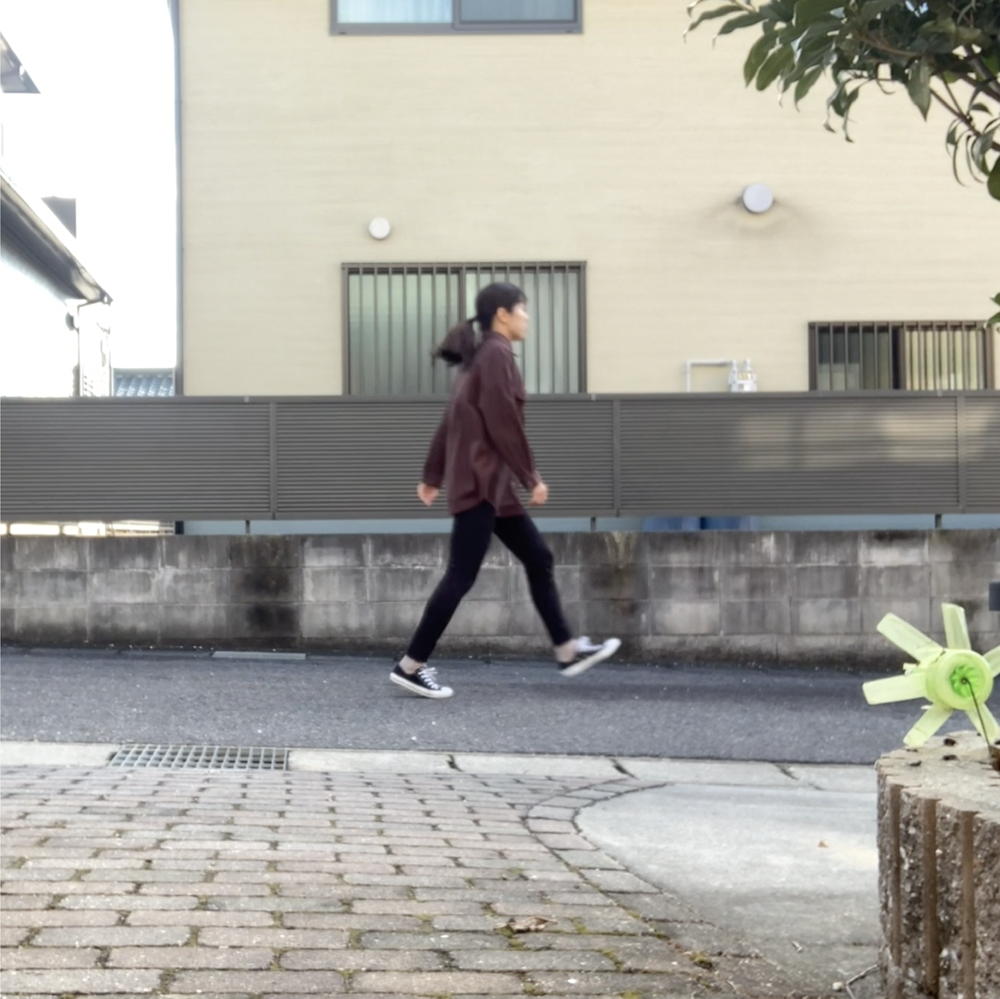
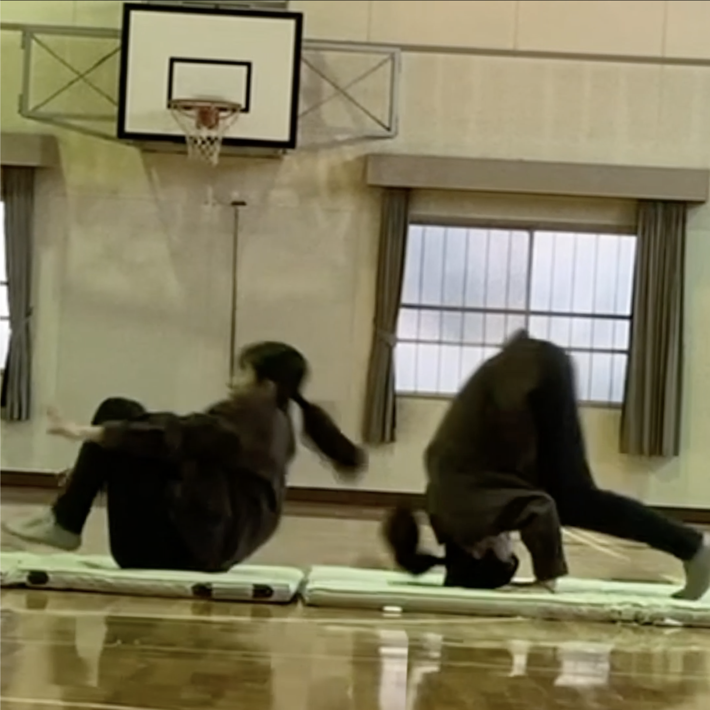
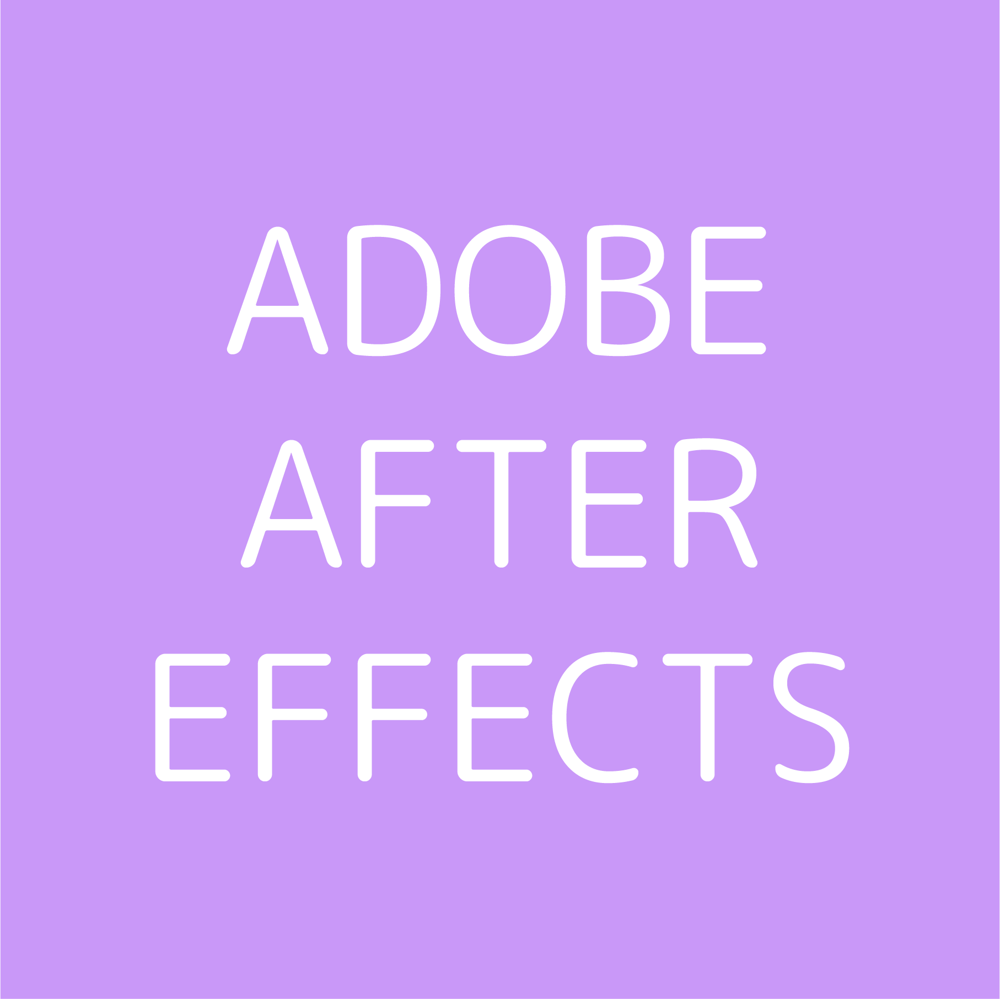

前後を「混ぜる」
2021 映像制作
-
-
作品紹介
実習課題で制作した映像作品です。
「混ぜる/混ざる」をテーマに、人間にとって前と後ろとは何か、時間が経過することや人間の動きの不可逆性を問う作品です
私たちが日々生きている世界は、もしかしたら数えきれないほど存在する「現実」の中の一部にすぎないのかもしれません
-
-
コンセプト
現代では、スマートフォンなどの液晶技術が発展し、動画や映像を見ることがより身近なことになっています
テレビや動画を見ていて、みなさんも「逆再生」をしたことがあるのではないでしょうか。逆再生とは、本来現実にはありえない
「異常」なことでありますが、映像はその「異常」を人間にまるで「異常でないこと」のように認識させているのではないかと私は
考え、この逆再生することの時間的な異常さや人間の物理的動作の異常さを伝えることをコンセプトにしました
もしかしたら、本当に異常なのは私たちが生きている世界なのかもしれないという「第2の現実の可能性」を捉えます
-
-
制作過程
- 
-
実際に「動作」を逆再生してみる
テーマを「逆再生」にしたので、まずは実際に
動作を撮影して逆再生にし、
違和感の感じる動きを追求します
はじめはグリーンバックを使用してましたが
最終的な作品では使用しませんでした


- 
-
決定した動作を再撮影する
いろいろな動作をしてみて、時間な経過を感じやすいように
横から撮影したときに違和感を感じやすい
スキップ、階段の上り下り、前転後転の３種類に
動作を絞って、実際に屋外や体育館で撮影しました
- 
-
映像を編集してみる
今回の制作で1番難しいことは、「やってみないとどうなるのかわからない」ことでした
撮影した映像を再生、逆再生してみてどう見えるか確認しながら編集しました。あまりにも逆再生に違和感を
感じなさすぎると、視聴者に逆再生の非現実性を感じてもらえなくなるため、混ぜる/混ざるを意識して、
人の頭を混乱させるために、徐々にどれが再生でどれが逆再生なのか、どちらが前でどちらが後ろなのか、
わけがわからなくなる見え方を追求しました
その結果、始めは再生と逆再生を見せ、途中から再生に逆再生を混入させ、
次第に明らかな違和感を発生させることによって視聴者の混乱を導くようにしました
- 
- 
- 
-
-
使用ソフトウェア
-

-